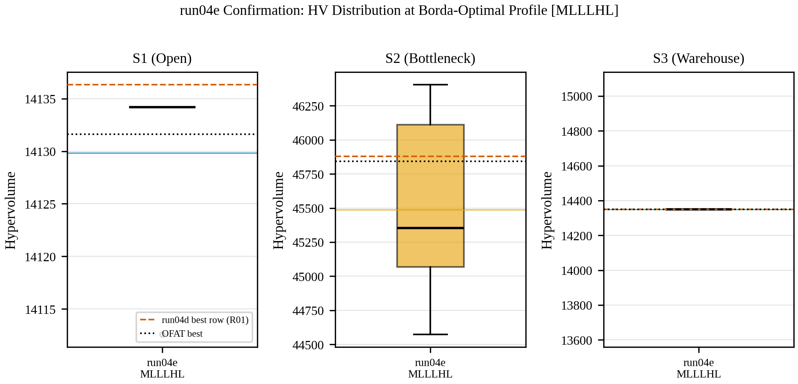
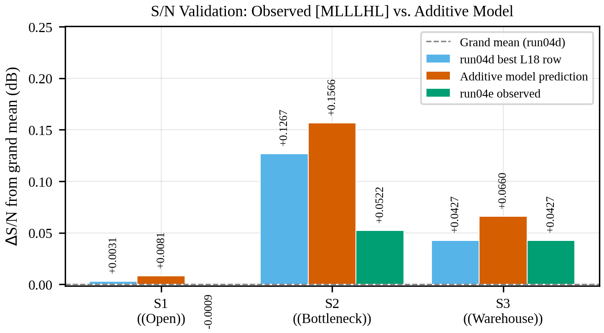
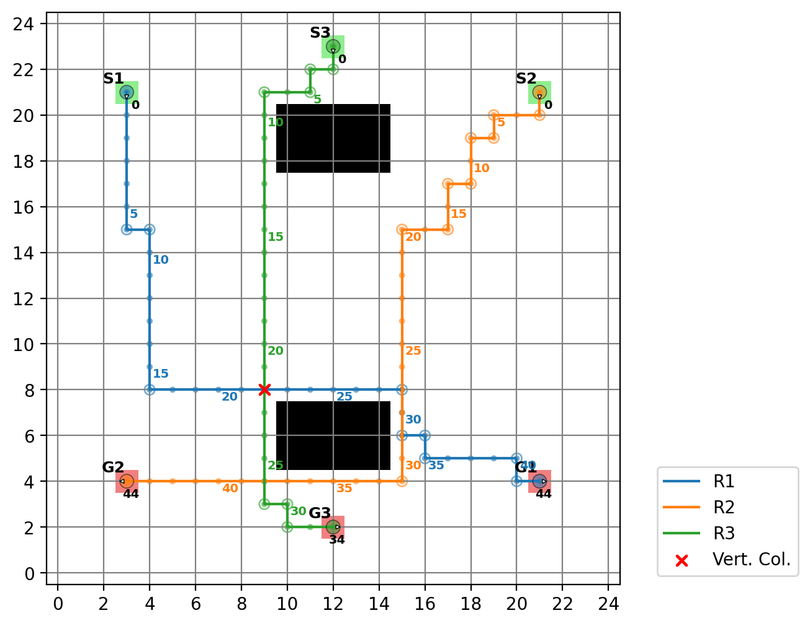
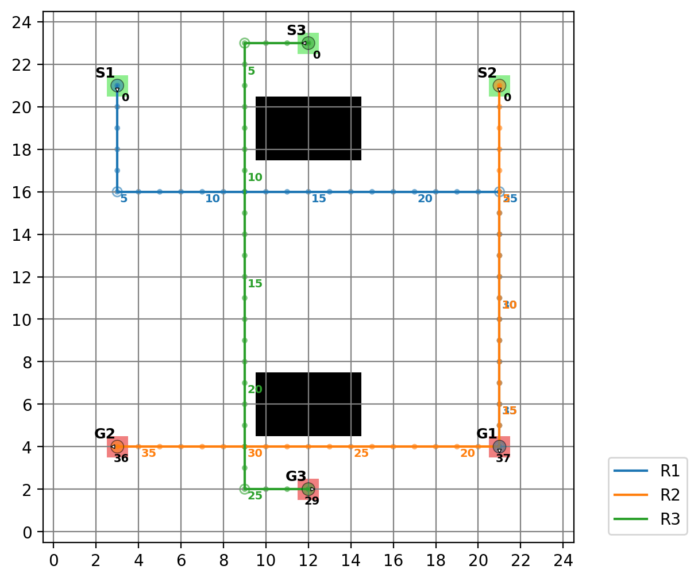
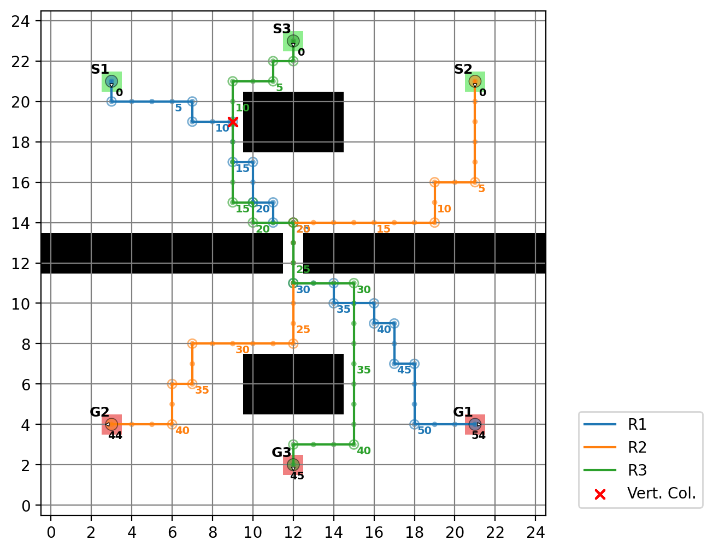
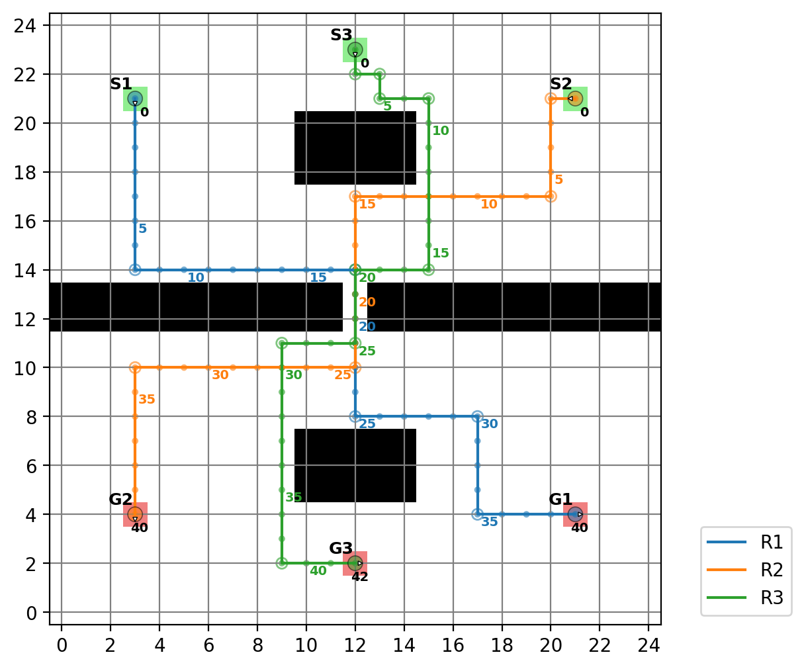
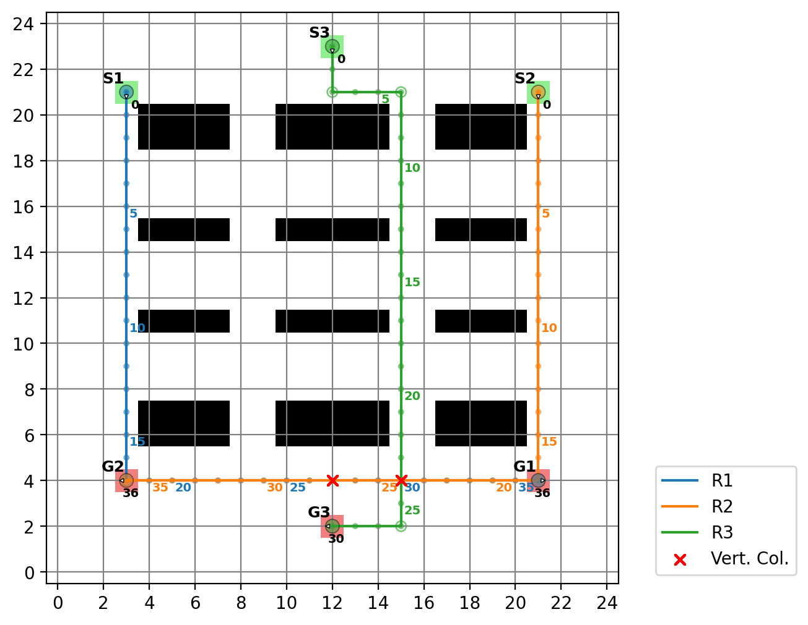
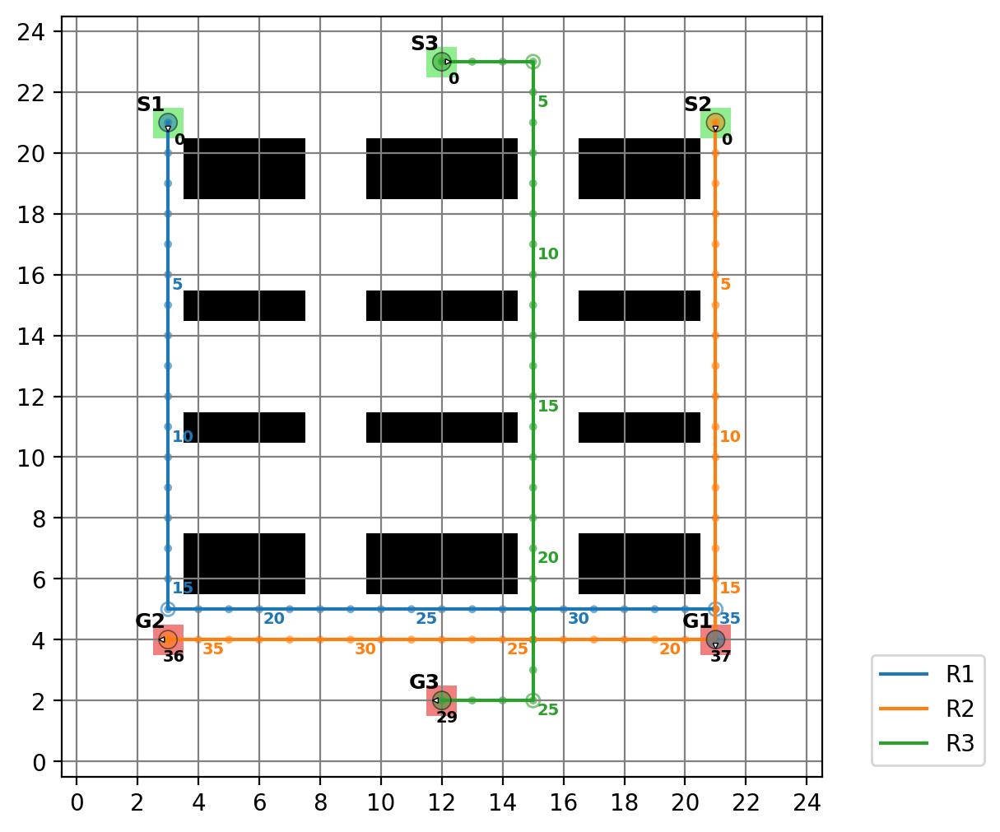

Sensitivity Analysis of Operator-Specific Crossover and Mutation Rates for Multi-Robot Path Planning Using NSGA-II
Ariadie Chandra Nugraha1,2,
Oyas Wahyunggoro1*,
Adha Imam Cahyadi1
1 Dept. of Electrical Engineering and Information Technology, FT, UGM |
2 Dept. of Electrical Engineering Education, UNY |
* Corresponding Author
Abstract — This paper presents a two-phase empirical sensitivity study of six operator-specific activation probabilities in an NSGA-II framework for three-agent grid-based multi-robot path planning. The operators under investigation are two crossover operators, whole-path swap (WPS) and partial-path swap (PPS), and four mutation operators: insert-zero (INS), delete-zero (DEL), direction-swap (SWD), and wait-detour (WTD). All six operators are domain-specific and feasibility-aware.
Phase 1 employs a One-Factor-At-A-Time (OFAT) design, sweeping each operator probability across 11 discrete levels on three 25×25 map topologies (S1: open, S2: bottleneck, S3: warehouse), totaling 1,980 runs. A conditional testing design is introduced to handle the structural dependency between INS and DEL. Phase 2 applies a Taguchi L18 orthogonal array (540 runs) to identify a cross-scenario combined parameter profile, subsequently validated in a 30-run confirmation experiment.
Key results: SWD exhibits the strongest and most consistent sensitivity (Kruskal-Wallis p < 0.001 in all scenarios), with a clear inverted-U response peaking at rate 0.2–0.3 (improvements of +32% to +76% over A*-baseline). PPS achieves the highest single-scenario gain (+79% on S3). The Taguchi phase yields the plurality-selected combined profile: WPS = 0.4, PPS = 0.5, INS = 0.1, DEL = 0.3, SWD = 0.4, WTD = 0.0, confirmed within ±0.5 dB tolerance (S/N gaps: −0.009, −0.104, −0.023 dB).
Keywords — Multi-robot path planning; NSGA-II; Genetic operators; Crossover probability; Mutation probability; Sensitivity analysis; Taguchi orthogonal array; Operator interaction; Multi-objective optimization; Warehouse navigation
Isi Paper
Ringkasan lengkap metodologi, hasil, dan analisis dari eksperimen 2.550 run.
1. Introduction
Path planning for multiple autonomous robots in shared environments presents a fundamental combinatorial challenge. When formulated as a Multi-Objective Optimization (MOO) problem that simultaneously minimizes individual robot travel times, the problem space grows exponentially with the number of agents. Among evolutionary approaches, NSGA-II has become a widely adopted framework for MOO in path planning.
A critical design question remains underexplored: what activation probability should each individual operator be assigned? Conventional GA literature often prescribes high crossover (Pc = 0.7–0.9) and low mutation (Pm < 0.1), but these are not universally applicable for domain-specific operators. This paper addresses this gap through systematic OFAT and Taguchi analysis.
2. Method
Chromosome encoding: Each gene uses integer codes {0, 1, 2, 3, 4} for no movement, up, down, left, right. Initial population via A* algorithm.
Six genetic operators: WPS (whole-path swap), PPS (partial-path swap), INS (insert-zero), DEL (delete-zero), SWD (direction-swap), WTD (wait-detour).
Phase 1 — OFAT: 11 levels × 10 seeds × 6 operator blocks × 3 scenarios = 1,980 runs. Fixed 100-generation budget.
Phase 2 — Taguchi L18: L18(2¹×3⁷) orthogonal array, 6 factors, 3 levels per factor. 18 conditions × 3 scenarios × 10 replicates = 540 runs + 30 confirmation runs = 2,550 total.
| Factor | Operator | L | M | H |
|---|---|---|---|---|
| A | WPS | 0.1 | 0.4 | 0.7 |
| B | PPS | 0.5 | 0.7 | 0.9 |
| C | INS | 0.1 | 0.2 | 0.2 |
| D | DEL | 0.3 | 0.8 | 0.9 |
| E | SWD | 0.2 | 0.3 | 0.4 |
| F | WTD | 0.0 | 0.1 | 0.2 |
3. Results & Discussion
3.1 OFAT Crossover Sensitivity
WPS: KW significant in all scenarios. Rate = 1.0 collapses to baseline (population homogenization). Rec. range: 0.1–0.4.
PPS: Significant in S1/S2, ns in S3 (uniformly high). At rate = 1.0, maintains +31% to +79%. Rec.: 0.8.
3.2 OFAT Mutation Sensitivity
SWD: Most consistent — KW *** in all scenarios. Inverted-U peak at 0.2–0.3 (+32% to +76%).
WTD: Topology-dependent; significant only in S3 (+29% at rate = 0.1).
INS/DEL: INS solo significant only in S1 (+2.3%). DEL threshold-active in S3 (+7.7% over INS baseline). Rec.: INS = 0.2, DEL = 0.3.
| Rank | Op. | Hmax | Sig. | Max Δ | Rec. |
|---|---|---|---|---|---|
| 1 | SWD | 89.7 | 3/3 *** | +76% | 0.3 |
| 2 | PPS | 23.3 | 2/3 | +79% | 0.8 |
| 3 | WPS | 79.9 | 3/3 *** | +75% | 0.4 |
| 4 | WTD | 43.9 | 1/3 *** | +29% | 0.1 |
| 5 | INS | 20.0 | 1/3 * | +2.3% | 0.2 |
| 6 | DEL | 5.12 | 0/3 ns | +7.7% | 0.3 |
3.3 Taguchi L18 & Plurality Profile
The cross-scenario Taguchi recommendation uses unweighted plurality consensus voting to combine per-scenario best levels of parameter settings into a single robust profile.
WPS = 0.4 | PPS = 0.5 | INS = 0.1 | DEL = 0.3 | SWD = 0.4 | WTD = 0.0
Dipilih dengan plurality voting dari 3 skenario (S1, S2, S3)
Confirmation experiment: The plurality-selected profile [MLLLHL] was validated in 30 runs (10 per scenario). All scenarios satisfy ±0.5 dB Taguchi tolerance.
| Sc. | HV Mean ± Std | S/Npred | S/Nobs | Gap (dB) | Cons. |
|---|---|---|---|---|---|
| S1 | 14,129.86 ± 8.64 | 83.0117 | 83.0027 | −0.0089 | ✓ |
| S2 | 45,486.23 ± 637.55 | 93.2595 | 93.1551 | −0.1044 | ✓ |
| S3 | 14,348.41 ± 0.00 | 83.1594 | 83.1361 | −0.0234 | ✓ |
Aplikasi Plurality Voting pada Paper Ini
Plurality voting digunakan untuk mengagregasi level faktor terbaik dari tiga skenario peta (S1: open, S2: bottleneck, S3: warehouse). Untuk setiap faktor, skenario memberikan suara (vote) pada level terbaiknya berdasarkan S/N ratio dari Taguchi L18 main effects. Level dengan perolehan suara terbanyak dipilih untuk menghasilkan profil gabungan yang robust across scenarios. Profil ini kemudian divalidasi dalam confirmation experiment dan terbukti berada dalam toleransi ±0.5 dB.
Visualisasi Eksperimen Konfirmasi

Fig 1. Distribusi HV (box plots, 10 replikasi) untuk profil terpilih di setiap skenario
Fig 2. Deviasi S/N terhadap grand mean: hasil observasi vs. prediksi model aditifPeta Lintasan Perwakilan (A* vs. NSGA-II Optimized)
Skenario 1 (Open Map)

A* Initial (Rute awal seeding)
NSGA-II Optimized (Hasil optimasi bebas tabrakan)Skenario 2 (Bottleneck Map)

A* Initial (Rute awal seeding)
NSGA-II Optimized (Koordinasi melalui penyempitan tengah)Skenario 3 (Warehouse Map)

A* Initial (Rute awal seeding)
NSGA-II Optimized (Navigasi lorong bebas konflik)4. Conclusion
- SWD: strongest & most consistent sensitivity, peak 0.2–0.3 (+32–76%)
- PPS: highest single gain +79% (S3), no collapse at rate = 1.0
- WTD: topology-dependent, +29% in S3 only
- DEL: threshold-active, +7.7% in S3 over INS baseline
- Plurality-selected profile [MLLLHL] confirmed within ±0.5 dB in all 3 scenarios
Referensi
- [1] G. Sharon et al., "Conflict-based search for optimal multi-agent pathfinding," Artif. Intell., vol. 219, pp. 40–66, 2015.
- [2] S. Lin et al., "Bio particle swarm optimization and reinforcement learning algorithm for path planning of AGVs," Sci. Rep., vol. 15, no. 1, p. 463, 2025.
- [3] S. M. LaValle, Planning Algorithms. Cambridge University Press, 2006.
- [4] Q. Shen et al., "A novel multi-objective dung beetle optimizer for Multi-UAV cooperative path planning," Heliyon, vol. 10, no. 17, e37286, 2024.
- [5] J. Yu and S. LaValle, "Structure and Intractability of Optimal Multi-Robot Path Planning on Graphs," Proc. AAAI, vol. 27, no. 1, pp. 1443–1449, 2013.
- [6] B. K. Patle et al., "A review: On path planning strategies for navigation of mobile robot," Def. Technol., vol. 15, no. 4, pp. 582–606, 2019.
- [7] K. Deb et al., "A fast and elitist multiobjective genetic algorithm: NSGA-II," IEEE Trans. Evol. Comput., vol. 6, no. 2, pp. 182–197, 2002.
- [8] R. Yuhang and Z. Liang, "An Adaptive Evolutionary MOEA and Its Application to Multi-UAV Path Planning," IEEE Access, vol. 11, pp. 50038–50051, 2023.
- [9] A. C. Nugraha et al., "Path planning as multi-objective optimization using the NSGA-II algorithm," ICE-ELINVO 2023, p. 030005, 2025.
- [10] A. Nait Chabane and O. Guenounou, "An enhanced genetic algorithm for optimized task allocation and planning in heterogeneous multi-robot systems," Complex Intell. Syst., vol. 11, no. 10, p. 435, 2025.
- [11] D. E. Goldberg, Genetic algorithms in search, optimization, and machine learning. Addison-Wesley, 1989.
- [12] A. E. Eiben and J. E. Smith, Introduction to Evolutionary Computing. Springer, 2015.
- [13] W. M. Spears, "Crossover or Mutation?," in Foundations of Genetic Algorithms, vol. 2, pp. 221–237, 1993.
- [14] T. Feng et al., "The Optimal Global Path Planning of Mobile Robot Based on Improved Hybrid Adaptive GA," IEEE Access, vol. 12, pp. 18400–18415, 2024.
- [15] A. Saltelli, Global sensitivity analysis: the primer. Wiley, 2008.
- [16] E. Zitzler and L. Thiele, "Multiobjective evolutionary algorithms: a comparative case study and the strength Pareto approach," IEEE Trans. Evol. Comput., vol. 3, no. 4, pp. 257–271, 1999.
- [17] N. Beume et al., "SMS-EMOA: Multiobjective selection based on dominated hypervolume," European J. Oper. Res., vol. 181, no. 3, pp. 1653–1669, 2007.
- [18] W. H. Kruskal and W. A. Wallis, "Use of Ranks in One-Criterion Variance Analysis," J. Am. Stat. Assoc., vol. 47, no. 260, pp. 583–621, 1952.
- [19] H. B. Mann and D. R. Whitney, "On a Test of Whether one of Two Random Variables is Stochastically Larger than the Other," Ann. Math. Stat., vol. 18, no. 1, pp. 50–60, 1947.
- [20] M. S. Phadke, Quality engineering using robust design. Prentice Hall, 1989.
Kembali ke Taguchi & Borda